Browse to https://accounts.google.com/signup and enter the requested information.
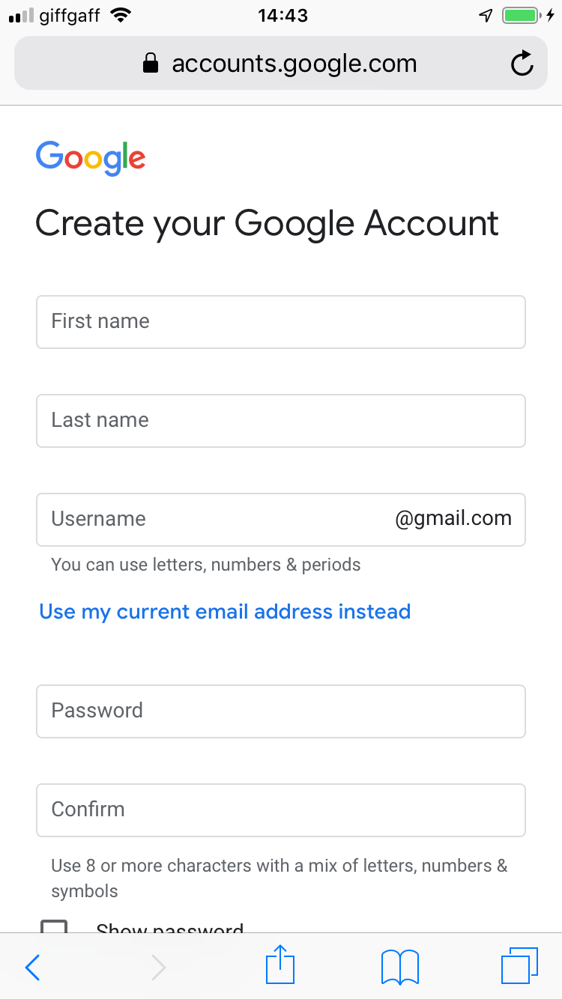
Once created, go to the Security tab, and tap 2-Step Verification.
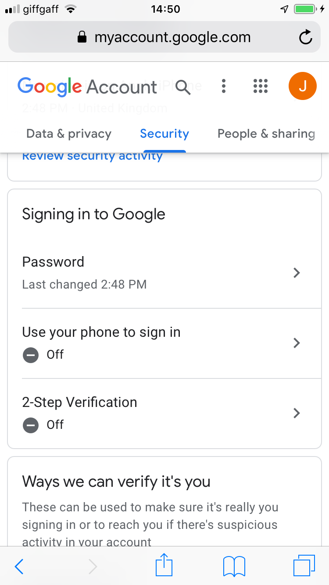Go through the steps to activate the 2-step verification.
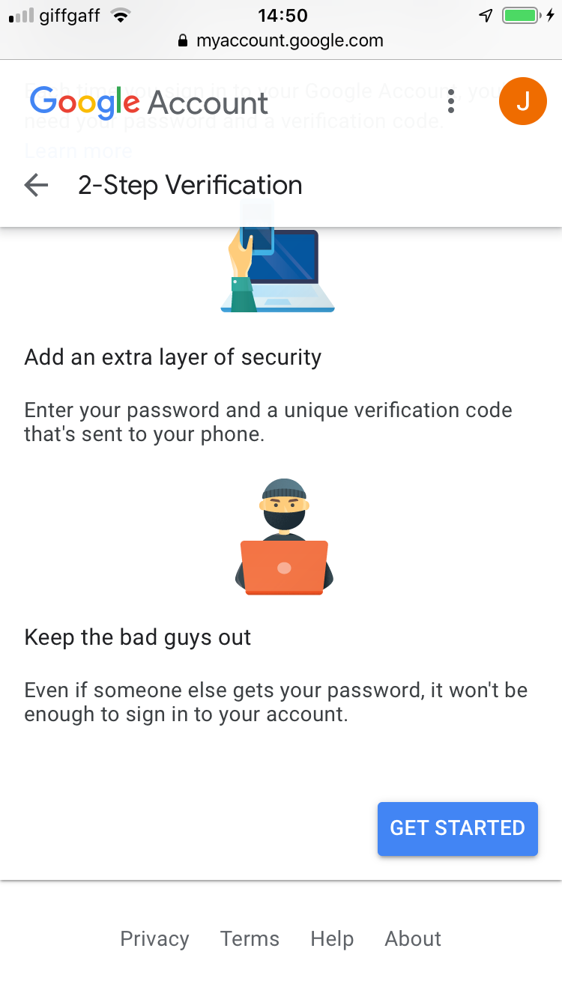 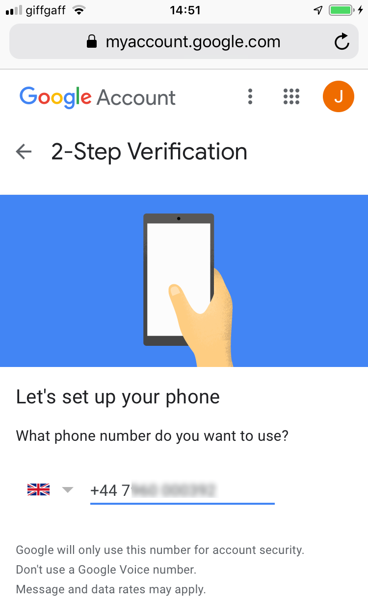 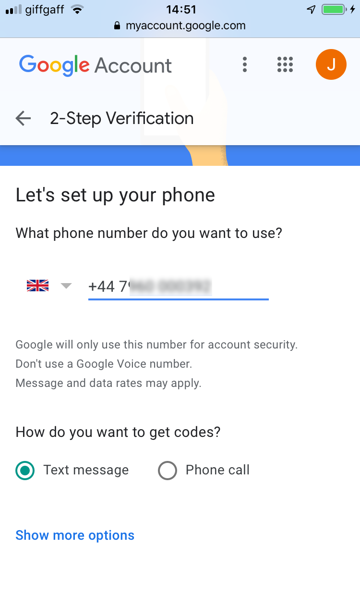 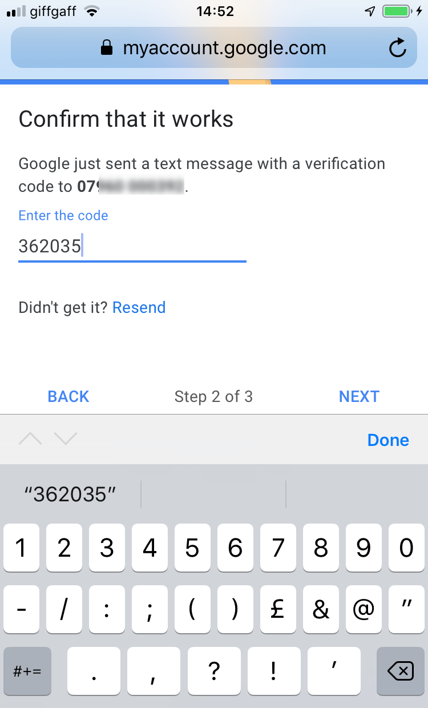 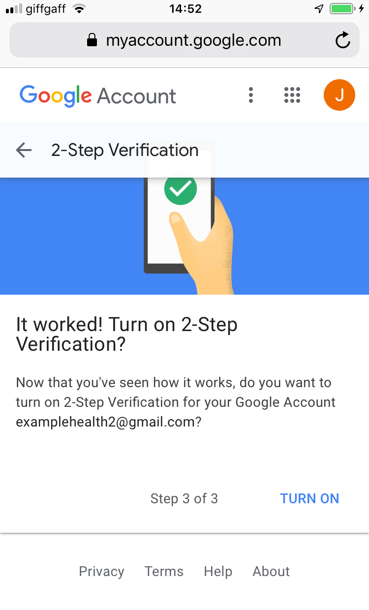Once 2-Step Verification has been activated, tap App Passwords. (You may need to return to the Security tab to find the App Passwords button.).
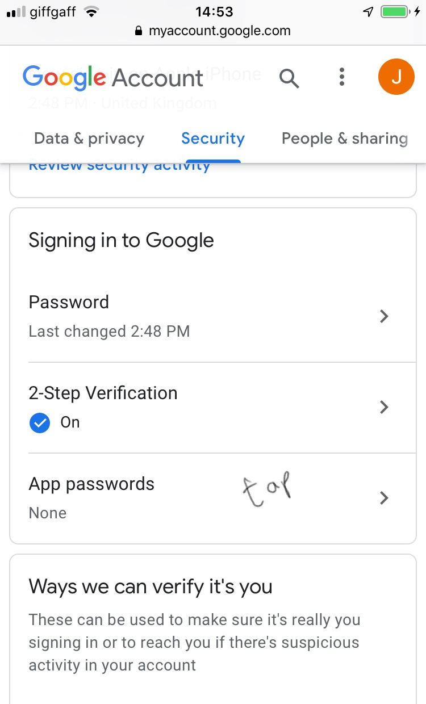In the Select app drop-down list, choose Other (Custom name).
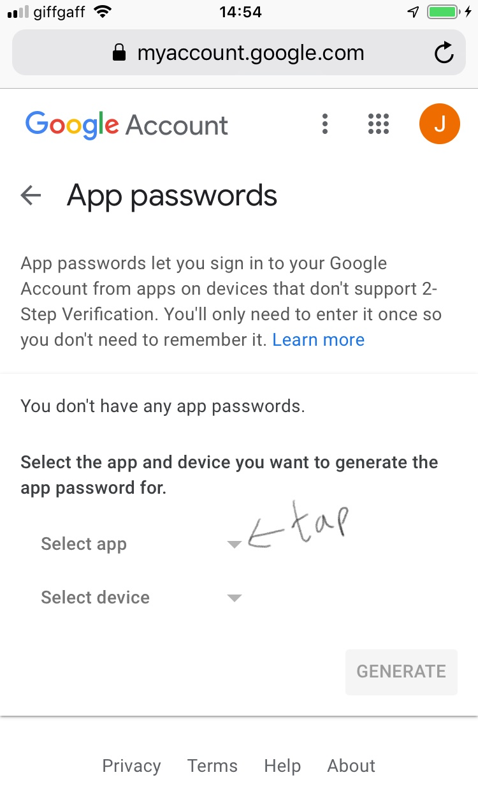Enter a name to associate with this password. (The name can be anything.)
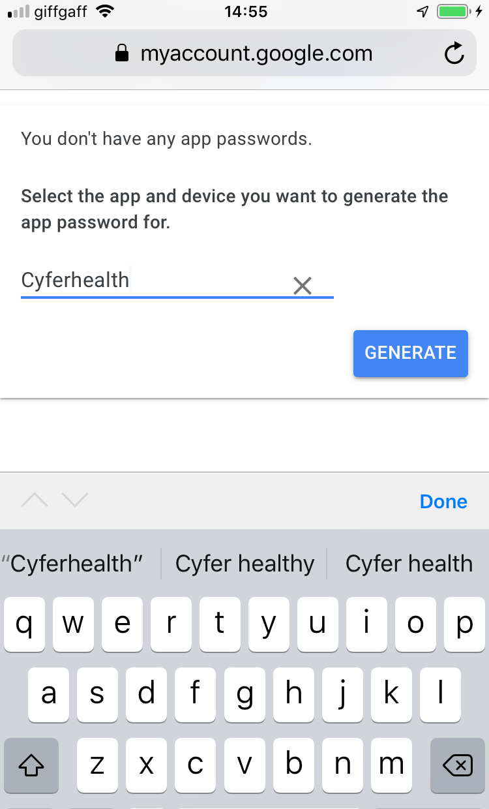You will now be shown the app password. Make sure you copy it either by tapping it and choosing copy, or making a note of it with pen and paper. You will not be shown this password again. If you forget the password, just create another one.
 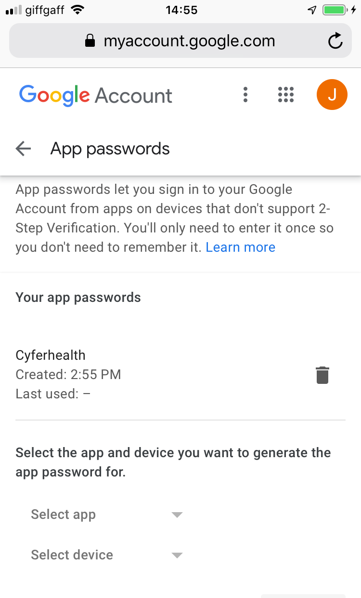
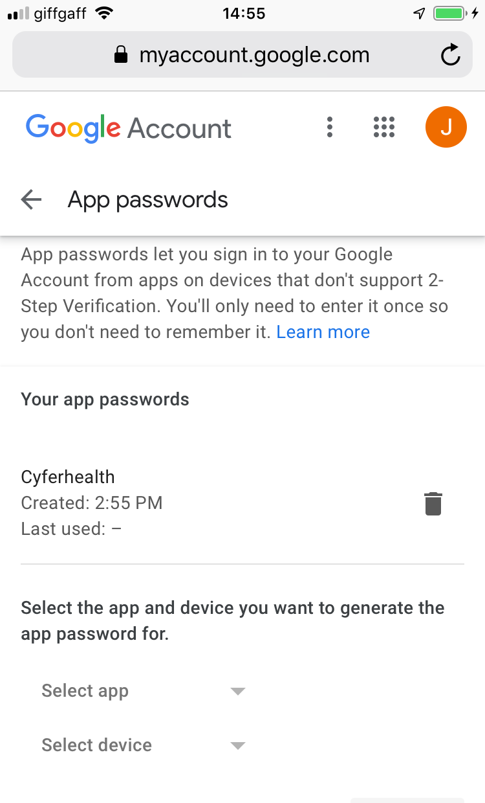
The Google account and app password are now ready to be used by the Cyfer Health app.